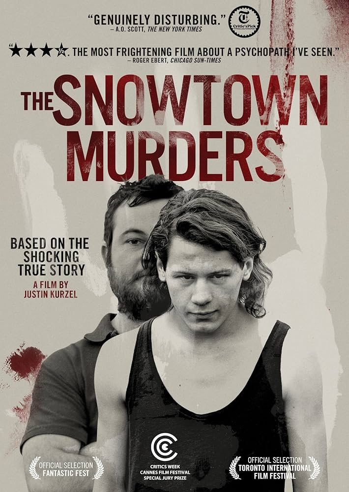

Australia's most gruesome case, now archived in full.
Between 1992 and 1999, John Justin Bunting, Robert Joe Wagner, and James Spyridon Vlassakis committed a series of murders in and around Adelaide, South Australia. Their final victim, 15-year-old David Johnson, was lured to a disused bank building in Snowtown, where he was murdered and dismembered. His remains were stored in a barrel of acid.
The murders were part of a housing fraud scheme, and the remains of several victims were discovered in barrels hidden in the abandoned bank vault in Snowtown. The case became synonymous with horror in Australia's criminal history.
⚠️ Viewer discretion advised. Contains disturbing content based on real events.
